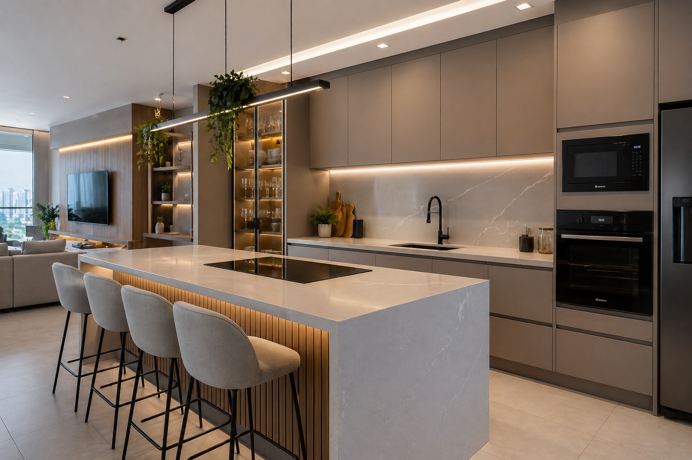
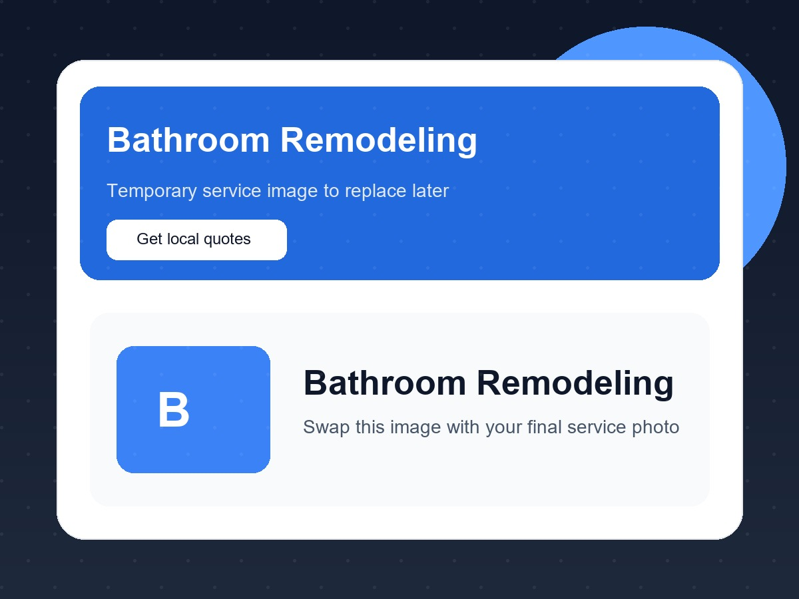
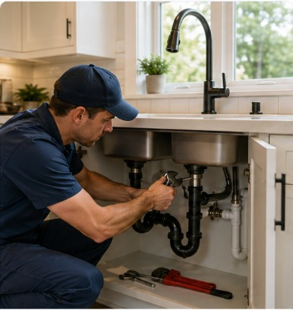
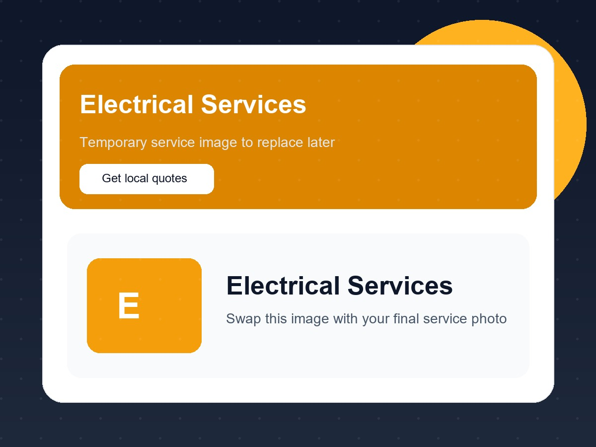

Find trusted local pros and compare estimates faster
GetEstimateFast helps homeowners and businesses request quotes, compare local professionals, and submit enough project detail to get more accurate pricing with less back-and-forth.
Core service categories
Organized for regional growth without making the platform feel heavy or confusing.
Remodeling & Construction
Kitchen remodeling, bathroom remodeling, additions, contractors, and renovation projects.
View CategoryRoofing & Exterior
Roof repair, replacement, gutters, fencing, and outdoor hardscape work.
View CategoryPlumbing
Leak repair, drain cleaning, fixture replacement, and water heater work.
View CategoryElectrical
Panels, lighting, EV chargers, troubleshooting, and electrical upgrades.
View CategoryHVAC
AC repair, replacement, installation, duct cleaning, and air quality services.
View CategoryFlooring & Interior
Flooring, drywall, tile, and interior finishing work.
View CategoryOutdoor & Landscaping
Landscaping, irrigation, lawn care, tree removal, and pressure washing.
View CategoryCleaning & General Services
House cleaning, commercial cleaning, handyman, pest control, and more.
View CategoryPopular services in the first rollout
These are the core service pages to build first before city-page expansion.

Kitchen Remodeling
For cabinets, countertops, backsplash, flooring, and lighting projects.
View Service Page
Bathroom Remodeling
Detailed quote flow for showers, tubs, tile, fixtures, and full remodels.
View Service Page
Plumbing
Service-specific lead flow for leaks, drains, toilets, faucets, and water heaters.
View Service Page
Electrical Services
Lighting, panel upgrades, troubleshooting, outlets, and EV charger work.
View Service PageHow it works
The platform should feel like a guided matching process, not a generic form dump.
Tell us what you need
Users start with the service and share project details in a simple guided flow.
We qualify the request
Each service flow collects enough scope, size, timeline, and location data to reduce basic follow-up.
Compare matched pros
Qualified requests are shared with relevant local professionals based on service type and coverage area.
Why this structure should convert better
The new platform framing explains the process earlier and gives the user a clear path instead of dropping them straight into a long form.
Clear platform value
Users understand that the goal is to compare local professionals, not just fill out a generic lead form.
Regional authority
Categories, cities, and service pages make the site feel larger, more trusted, and more established.
Better lead quality
Conditional forms keep meaningful detail collection without overwhelming every user equally.
Areas served in the Tampa Bay region
Initial local SEO structure should cover the main cities within driving range of Riverview.
Trust and FAQ layer
Before the main quote flow, the platform should answer the questions that trigger hesitation.
Will I be charged to request quotes?
No. The platform is free to use and there is no obligation to move forward with any professional.
Why do you ask detailed project questions?
Detailed requests help professionals understand scope and estimate more accurately without multiple basic follow-up calls.
Will I get spammed?
Preview recommendation: explain that information is only shared with relevant local professionals for the selected request.